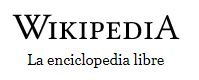

Español
1 717 000+ articulos
English
6 383 000+ articles
日本語
1 292 000+ 記事
Русский
1 756 000+ статей
Deutsch
2 617 000+ artikel
Français
2 362 000+ articles
Italiano
1 718 000+ voci
中文
1 717 000+ articulos
Polski
1 490 000+ hasel
Português
1 074 000+ artigos
ES
Español
Ingles
Arabe
italiano
Aleman
Leer Wikipedia en tu Idioma
Español
Ingles